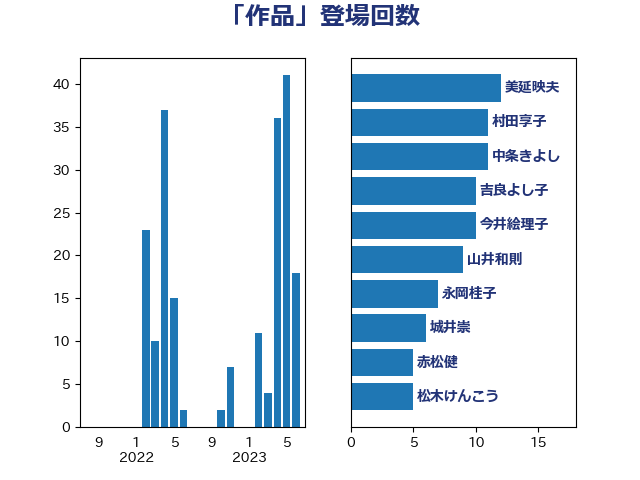

単語「作品」

| 美延映夫 | 日本維新の会 | 12 回 |
| 村田享子 | 立憲民主党 | 11 回 |
| 中条きよし | 日本維新の会 | 11 回 |
| 吉良よし子 | 日本共産党 | 10 回 |
| 今井絵理子 | 自由民主党 | 10 回 |
| 山井和則 | 立憲民主党 | 9 回 |
| 永岡桂子 | 自由民主党 | 7 回 |
| 城井崇 | 立憲民主党 | 6 回 |
| 赤松健 | 自由民主党 | 5 回 |
| 松木けんこう | 立憲民主党 | 5 回 |
| 伊藤孝恵 | 国民民主党 | 5 回 |
| 柚木道義 | 立憲民主党 | 4 回 |
| 山下貴司 | 自由民主党 | 4 回 |
| 礒崎哲史 | 国民民主党 | 3 回 |
| 末松信介 | 自由民主党 | 3 回 |
| 斎藤嘉隆 | 立憲民主党 | 3 回 |
| 鰐淵洋子 | 公明党 | 2 回 |
| 鈴木義弘 | 国民民主党 | 2 回 |
| 赤澤亮正 | 自由民主党 | 2 回 |
| 谷川とむ | 自由民主党 | 2 回 |
| 西岡秀子 | 国民民主党 | 2 回 |
| 荒井優 | 立憲民主党 | 2 回 |
| 紙智子 | 日本共産党 | 2 回 |
| 竹内真二 | 公明党 | 2 回 |
| 石川香織 | 立憲民主党 | 2 回 |
| 田村貴昭 | 日本共産党 | 2 回 |
| 浅川義治 | 日本維新の会 | 2 回 |
| 津島淳 | 自由民主党 | 2 回 |
| 梅谷守 | 立憲民主党 | 2 回 |
| 岸田文雄 | 自由民主党 | 2 回 |
| 山本剛正 | 日本維新の会 | 2 回 |
| 宮本岳志 | 日本共産党 | 2 回 |
| 大石あきこ | れいわ新選組 | 2 回 |
| 塩村あやか | 立憲民主党 | 2 回 |
| 和田有一朗 | 日本維新の会 | 2 回 |
| 齋藤健 | 自由民主党 | 1 回 |
| 金村龍那 | 日本維新の会 | 1 回 |
| 落合貴之 | 立憲民主党 | 1 回 |
| 萩生田光一 | 自由民主党 | 1 回 |
| 若宮健嗣 | 自由民主党 | 1 回 |
| 浜田聡 | NHK党 | 1 回 |
| 森山浩行 | 立憲民主党 | 1 回 |
| 梅村みずほ | 日本維新の会 | 1 回 |
| 岬麻紀 | 日本維新の会 | 1 回 |
| 山谷えり子 | 自由民主党 | 1 回 |
| 山本博司 | 公明党 | 1 回 |
| 小野泰輔 | 日本維新の会 | 1 回 |
| 小宮山泰子 | 立憲民主党 | 1 回 |
| 和田義明 | 自由民主党 | 1 回 |
| 勝目康 | 自由民主党 | 1 回 |
| 中川宏昌 | 公明党 | 1 回 |
| 上川陽子 | 自由民主党 | 1 回 |
| 一谷勇一郎 | 日本維新の会 | 1 回 |